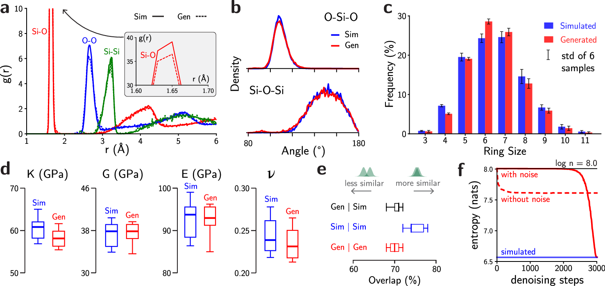
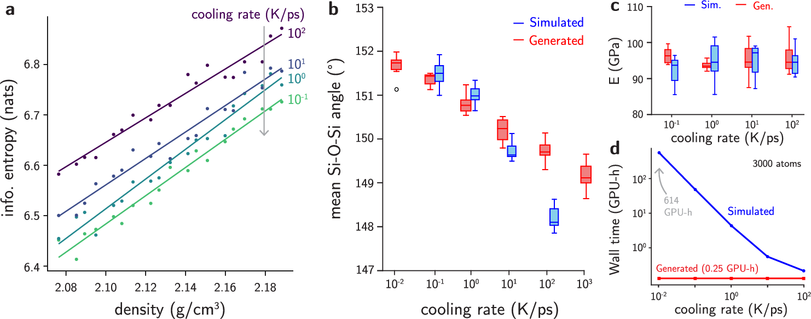
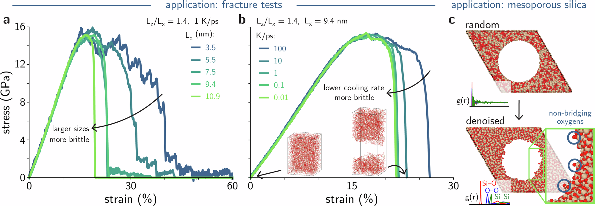
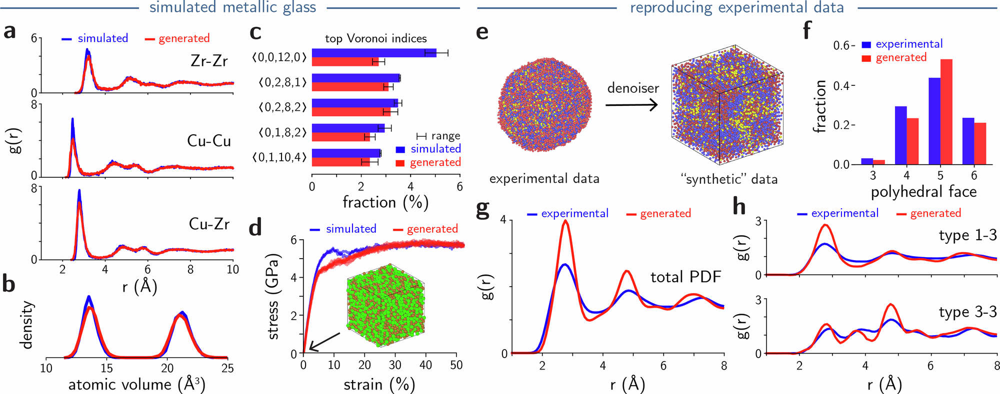

全文精读
面向非晶材料的生成式扩散模型
A generative diffusion model for amorphous materials
解读更新 2026-10-20 21:13 · 依据论文全文整理
全文精读已完成，文章版正在逐步升级。现有内容可继续阅读。
非晶材料缺乏长程有序，传统熔融淬火模拟在慢冷却和大体系条件下成本高昂。本文以等变图神经网络扩散模型生成原子结构，并通过冷却速率条件控制加工历史，结合结构统计、环境分布及力学响应验证结果。作者进一步展示介孔二氧化硅生成和实验金属玻璃数据增强。其价值在于连接加工、结构与性质，但生成后仍可能需要短时分子动力学修正，屈服强度也略被低估。
研究问题
非晶结构的高维构型空间使传统模拟难以高效采样，慢冷却与大尺度需求进一步推高成本。既有生成方法还可能产生非物理环境，或缺乏充分多样性。本文关注的不只是生成外观合理的结构，而是同时恢复结构分布与宏观性质，为加工—结构—性质关系研究提供样本。
方法与路线
模型采用E(3)等变NequIP预测原子噪声，将冷却速率通过高斯基函数嵌入网络。推理包括2900步带外部噪声及100步无外部噪声去噪；二氧化硅与Cu₅₀Zr₅₀随后接受短时MD修正。验证结合配对分布、环统计、环境信息熵和刚度、断裂响应。
创新与比较
解读：贡献主要是将条件原子生成与多层次物理验证连成可应用流程，而非仅提出扩散生成这一概念。模型既考察环境采样多样性，也检验机械性质，并展示未以多孔表面训练时的介孔生成，以及从单个实验原子结构学习合成样本的能力。
证据与发现
作者报告，在3000原子、0.01 K/ps的指定比较中，生成相对MD至少加速2400倍；大尺寸二氧化硅的延性随冷却减慢而下降，但0.1与0.01 K/ps断裂应变接近。金属玻璃生成结构总体恢复局部统计和应力—应变响应，同时存在二十面体比例与屈服应力低估。
局限与边界
作者承认异常环境仍需短MD修正，且屈服强度略低估。条件密度依赖回归，大体系成本为外推。原页P5正文与图注的生成样本数为六与五，无法统一；P8基准时长表述亦待澄清。记录未确认原文件公式缺项；补充材料未提供，不能声称独立复核其结果。
方向关联
解读：与结构设计和可靠性研究的联系，在于可低成本提供不同加工历史、尺寸和孔形条件下的原子样本，并以弹性、屈服和断裂响应筛查物理可信度。环境分布重叠可作辅助指标，但不证明概率分布完全一致；论文未开展设备监测、故障诊断等智能运维验证。
后续研究建议
建议：先在已验证体系复现结构与力学统计，分别记录去噪及MD修正成本，并增加独立样本检查屈服偏差。随后检验不同尺寸、冷却条件下的外推稳定性，同时核查样本数与计时口径。若迁移到可靠性研究，应另设失效指标和独立参考数据，不能直接采用生成结果作真值。
阅读建议
推荐作为材料结构生成与可靠性建模的方法论文重点阅读，尤其关注结构统计之外的力学验证，以及慢冷却、大尺寸条件下的适用边界。
原图未改动。以下图注来自标注的来源，不据此补写摘要未报告的实验结论。
已取得的论文原图

原文图注与出处
a Forward diffusion and reverse denoising process for amorphous materials. The structure and partial pair distribution functions (PDF) for SiO 2 are provided as an example. In the forward process, noise is progressively added to atomic positions until the structure becomes random. In the reverse (generative) direction, the model gradually denoises the positions of randomly sampled positions and creates physically meaningful amorphous structures. b The denoiser model is trained to predict the displacement added to the amorphous structures. Displacements ϵ are sampled from Gaussian distributions, and added at train time to the training structures. Structure-level labels, such as cooling rates are embedded to the training set with a Gaussian basis set. c To generate new structures, the model is provided with a random input structure and a target cooling rate. The structure is denoised over multiple time steps following a noise schedule similar to the denoising diffusion probabilistic model (DDPM) framework 3 . d Figures of merit used to validate generated amorphous structures include short range order, medium range order, network connectivity, mechanical properties, and information entropy. e In this work, the generative models for amorphous materials were used across multiple applications, including generating glassy structures conditioned to very slow cooling rate, large scales, pores, or reproducing the phase space of simulated and experimental metallic glasses.
Yang, Kai et al.
原文图页 · CC BY 4.0

原文图注与出处
a Comparison between the partial pair distribution functions (PDFs) of simulated (solid lines) and generated (dashed lines) shows that generated structures are quite similar to simulated ones. This close agreement is also seen in other structural metrics, including b distributions of Si-O-Si and O-Si-O bond angles and c ring size distributions. In ( c ), the error bar is the standard deviation of across six simulated or generated samples. d Elastic properties of generated structures are indistinguishable from the simulated ones. The properties computed here include the bulk modulus ( K ), shear modulus ( G ), Young’s modulus ( E ), and Poisson’s ratio ( ν ). e Generated structures follow the expected distribution of amorphous environments, as quantified by an information-theoretical strategy. 22 The overlap between generated (Gen) and simulated (Sim) distributions of environments (black) is nearly equal to the overlap between simulated and simulated (blue) distributions. In ( d and e ), the thicker line, box, and whiskers depict the median, interquartile range, and range of the distribution, respectively. f Structures generated without a large external noise schedule cannot reproduce the information content of the reference structures, instead leading to structures with a high number of outlier environments (high entropy). On the other hand, a denoising process that includes an external noise schedule is able to generate more realistic structures.
Yang, Kai et al.
原文图页 · CC BY 4.0

原文图注与出处
a The diffusion models capture the correct trends in information entropy for amorphous structures generated under different cooling rates and densities. Faster rates often lead to structures with more outlier environments and thus higher information entropy. b Trends in bond angle distributions are reasonably captured when a single diffusion model is used to generate structures across different cooling rates. The models continue to exhibit the correct trends even in regimes outside of the training domain (10 −2 and 10 3 K/ps) c Young’s modulus ( E ) of generated a-SiO 2 structures across different cooling rates. The moduli are highly sensitive to outliers, yet the denoiser is able to generate structures with accurate Young’s modulus compared to simulations. In ( b and c ), the horizontal line, box, and whiskers depict the median, interquartile range, and range of the distribution, respectively. The single data point in b (10 −2 K/ps) represents an outlier, which is away from the median by at least 1.5 times the interquartile range. d The computational cost (in GPU-h) of simulating a-SiO 2 within the melt-quench process drastically increases with lower cooling rate, whereas the generative model has constant inference time. At very low cooling rates (10 −2 K/ps), the difference in computational wall time can reach three orders of magnitude.
Yang, Kai et al.
原文图页 · CC BY 4.0

原文图注与出处
a Stress-strain curves show that generated a-SiO 2 structures recover the right behavior of elastic and plastic deformation behavior across length scales, with more ductile fracture at smaller length scales while maintaining a constant ultimate tensile strength at fixed aspect ratio ( L z / L x = 1.4). b Stress-strain curves from generated a-SiO 2 structures of the same shape and size ( L z / L x = 1.4, L x = 9.4 nm) under conditional cooling rates show that slower cooling rate leads to a more brittle behavior for amorphous silica. c The model successfully generates mesoporous a-SiO 2 structures despite not being trained on surfaces or porous structures. Partial pair distribution functions (PDFs) indicate that the structure remains amorphous despite the presence of surfaces and pores. Interestingly, the pore surface reproduces the experimental concentrations of non-bridging oxygens, holding promise to modeling silanol defects and other interfacial behavior of amorphous mesoporous silica.
Yang, Kai et al.
原文图页 · CC BY 4.0已取得的论文原图


原文图注与出处
a Partial pair distribution functions (PDFs) g ( r ) of generated Cu 50 Zr 50 structures (red lines) exhibit good agreement with PDFs of their simulated counterparts (blue lines), including capturing the shorter Cu-Cu pair interactions compared to Cu-Zr and Zr-Zr pairs. b Distributions of atomic volume exhibit great agreement between the coordinations and local environments of generated Cu 50 Zr 50 structures (red) and their simulated, ground-truth counterparts (blue). c Generated Cu 50 Zr 50 structures reproduce the fractions of major Voronoi polyhedra compared to their simulated counterparts, only under-representing 〈0, 0, 12, 0〉. Error bars for indices indicate the range of the distribution. d Stress-strain behavior of generated Cu 50 Zr 50 structures (red, five samples) approach the ones from their simulated Cu 50 Zr 50 counterparts (blue, 2 samples), with equivalent Young’s modulus and strength, despite slightly underestimated yield strength. e Beyond simulation data, the generative diffusion model can be trained on experimental data, such as the atomistic structure characterized by Yang et al. 42 and generate synthetic counterparts to the experimental results. f Generated atomic structure using experimental data shows good agreement on polyhedral face fractions (red) compared to results from the experimental atomic model (blue). g Total PDFs and h partial PDFs show that generated structures correctly capture the pair interactions from the experimental three-component metallic glass, including the anomalous peak positions and intensities for the 3-3 pairs.
Yang, Kai et al.
原文图页 · CC BY 4.0查看公开摘要
Generative models show great promise for the inverse design of molecules and inorganic crystals, but remain largely ineffective within more complex structures such as amorphous materials. Here, we present a diffusion model that reliably generates amorphous structures up to 3 orders of magnitude times faster than conventional simulations across processing conditions, compositions, and data sources. Generated structures recovered the short- and medium-range order, sampling diversity, and macroscopic properties of silica glass, as validated by simulations and an information-theoretical strategy. Conditional generation allowed sampling large structures at low cooling rates of 10 −2 K/ps to uncover a ductile-to-brittle transition and mesoporous silica structures. Extension to metallic glassy systems accurately reproduced local structures and properties from both computational and experimental datasets, demonstrating how synthetic data can be generated from characterization results. Our methods provide a roadmap for the design and simulation of amorphous materials previously inaccessible to computational methods.